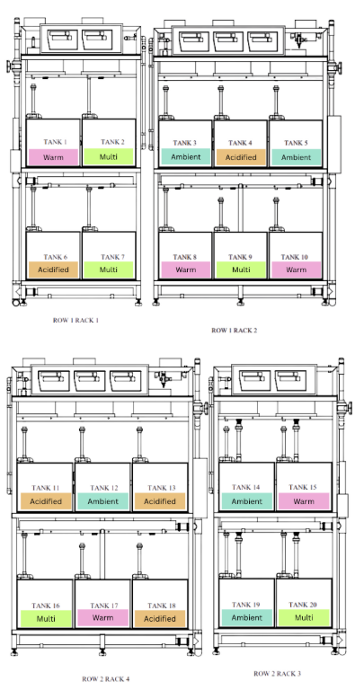
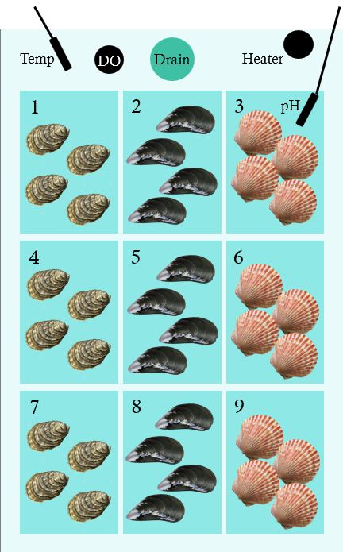
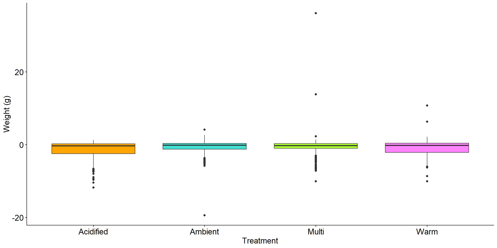
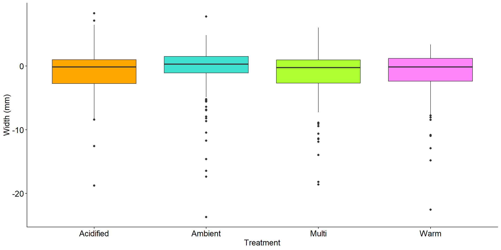
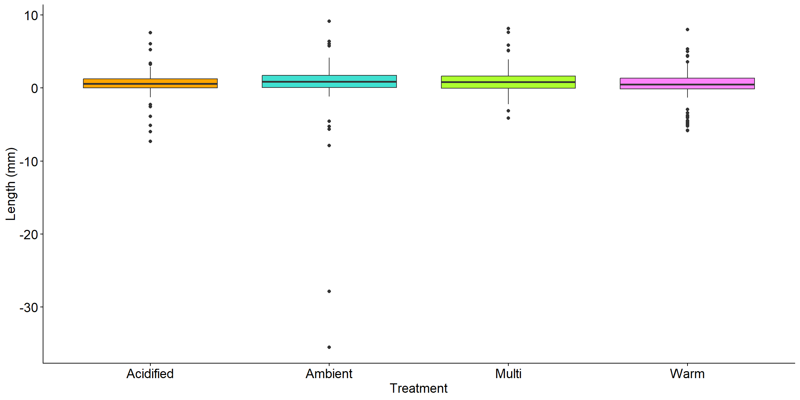
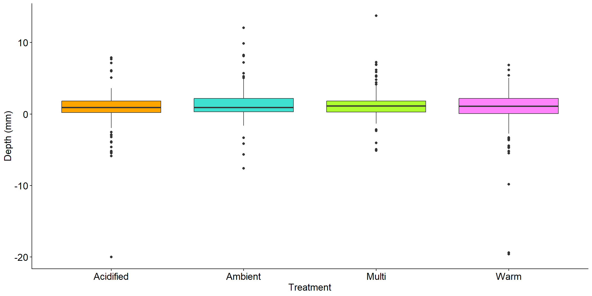
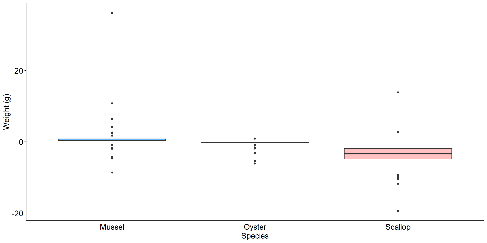
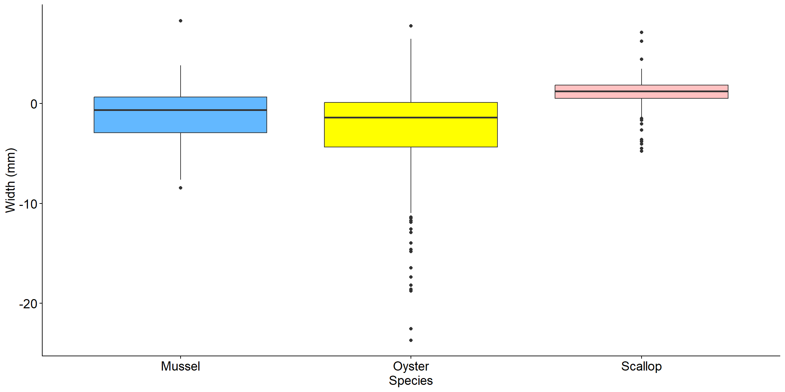
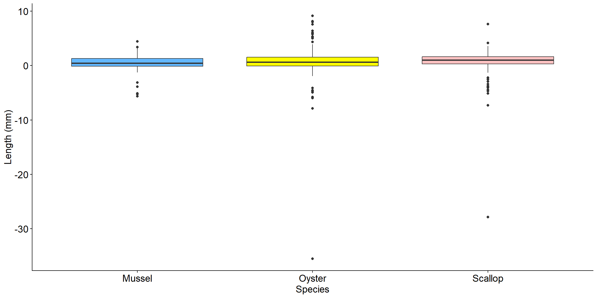
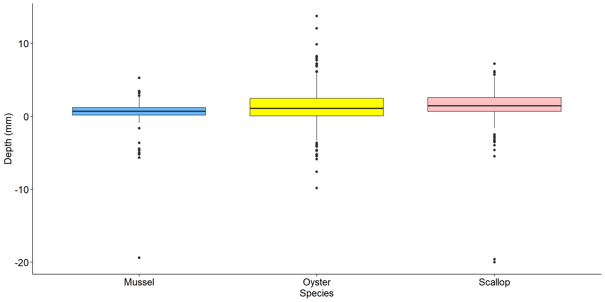

The effects of ocean warming and acidification on the growth of commercially important shellfish species
Introduction
Shellfish, or bivalves, are important species ecologically and commercially. Shellfish are filter feeders which means they obtain food by filtering particles and plankton from the water column (Vaughn and Hoellein 2018). This action of filtering removes particles from the water column which cleans the water providing an ecosystem service by improving water quality (Coen et al. 2007; Vaughn and Hoellein 2018). Filtration from shellfish also provide nutrient remediation services by removing nitrogen and phosphorus from the water which can provide other marine organisms that use shellfish reefs as habitat with benefits (Schatte Olivier et al. 2020). Shellfish are also economically important as they are a popular food source. In 2022, 13,943,751 pounds of shellfish were grown in aquaculture in the Northeastern United States with a value of $133,100,988 (Fisheries 2025).
As filter feeders, shellfish can consume unfavorable prey items including toxin-producing algae (Rourke et al. 2022). The consumption of such algae can result in the accumulation of phycotoxins in shellfish tissue (Rourke et al. 2022). Toxins produced by these algae such as paralytic shellfish poisons (PSP) and domoic acid (DA) can be harmful to human health if consumed (Shumway 1990; Grattan, Holobaugh, and Morris 2016; Rourke et al. 2022). Shellfish are generally classified as filter feeders, however, there have been observed differences in phycotoxin accumulation between species as a result of species-species differences in clearance rates and particle selectivity (Mafra, Bricelj, and Fennel 2010). An example of this includes oysters which have been found to have higher particle selectivity and lower clearance rates compared to other bivalves which means they are able to select particles of a desired size and type as well as ingest fewer particles from the water column (Mafra, Bricelj, and Fennel 2010). Other bivalves, including mussels and scallops, have been found to be less selective in what they consume (Sauvey et al., n.d.; Rourke et al. 2022; Mafra, Bricelj, and Fennel 2010; Hégaret et al. 2008). Understanding the relationship between species-species feeding behaviors and toxin accumulation is important for managing risks associated with human health and improving the sustainability of the shellfish industry.
Understanding these differences is important as harmful algal blooms (HABs) increase in duration and intensity along with the elevated effects of ocean warming and acidification, particularly in the Gulf of Maine (GoME) which is changing faster than other bodies of water (Anderson et al. 2014; Gobler et al. 2017; Seto, Karp-Boss, and Wells 2019; Brickman et al. 2021; Pershing et al. 2015; Siedlecki et al. 2021). HABs involve an abundance of multiple species of algae that produce toxins or bioactive compounds which often cause the closures of shellfish harvesting to manage the risk of toxin consumption from humans (Anderson et al. 2014; Anderson et al. 2021; Fernandes-salvador et al. 2021; Davidson et al. 2016; Grizzle and Ward 2016). Toxin level monitoring is often based on mussels as the ideal species since they accumulate toxins quickly, providing early detection of HABs (Rourke et al. 2022; Bricelj and Shumway 1998). While mussels are a good indicator of toxin levels, they may not be appropriate to assume the toxin levels found in other bivalve species as toxin accumulation can vary between species under current environmental conditions by up to 100-fold (Mafra, Bricelj, and Fennel 2010; Rourke et al. 2022; Sauvey et al., n.d.). Understanding these species-species differences in toxin accumulation can provide information on how to monitor the locations from which each shellfish species is harvested from rather than applying toxin monitoring from mussels to all shellfish species.
In addition to HABs, the metabolic rates of shellfish can also be affected by ocean warming and acidification (Crain, Kroeker, and Halpern 2008; Kordas, Harley, and O’Connor 2011; Kroeker et al. 2013; Lefevre 2016; Braga et al. 2018). Increased temperatures from ocean warming can cause these shellfish to have a higher metabolic demand leading to changes in clearance rates, particle selectivity, growth rate, and detoxification processes (Anestis et al. 2007; O’Connor 2009; Todgham and Stillman 2013; Gunderson, Armstrong, and Stillman 2016; Lowe et al. 2017). Coastal acidification can also affect the metabolic rates of shellfish by altering acid base physiology and energy demands (Portner, Langenbuch, and Reipschlager 2004; Widdicombe and Spicer 2008; Salisbury et al. 2011). Based on this information, predicted future water conditions are likely to cause significant impacts on feeding selectivity and toxin uptake of commercially important shellfish species (Braga et al. 2018).
To understand and predict the impact of these future water conditions on the shellfish industry in New Hampshire, it is necessary to research the effects of coastal stressors on the feeding behavior, food selectivity, and phycotoxin accumulation processes in commercially important bivalve species. This research was conducted to recognize how species are impacted by predicted changes in water conditions as well as to support the mitigation of negative impacts from HABs on the shellfish industry through the development of management strategies.
This paper looks at how predicted water temperatures and acidification levels affect metabolic rates, specifically growth, in commercially important shellfish species as part of the overall goal of this research. It is hypothesized that shellfish subjected to either increased temperatures, ocean acidification conditions, or a combination of both, will show less growth than individuals subjected to current summer ambient conditions in New Hampshire. It is also hypothesized that shellfish growth will differ between species.
Methods
Experimental Design
This experiment was conducted at the University of New Hampshire’s Coastal Marine Lab which has a system of aquaria that allows for precise control over partial pressure carbon dioxide (pCO2) and temperature. This system consists of 20 tanks that can be controlled individually to replicate experimental water conditions. For this experiment, four water condition treatments were randomly selected for each tank so that there were five tanks of each treatment in the system Figure 1. These treatments included ambient which was set to the ambient summer conditions of the area (17 degrees C, pH 8.0), ocean warming which was set to four degrees above ambient and pH 8.0 (21 degrees C, pH 8.0), ocean acidification which was set to ambient temperatures and pH 7.5 (17 degrees C, pH 7.5), and multi-stressor which was set to ocean warming temperatures and ocean acidification pH (21 degrees C, pH 7.5). Each tank was split into nine boxes and each box could hold four individuals from the same species. Each column of boxes was randomly designated a species Figure 2. These species included Eastern oysters (Crassostrea virginica), Blue mussels (Mytilus edulis), and Atlantic sea scallops (Placopecten magellanicus).

Shellfish were collected from local farms to have 240 individuals of each species. These individuals were measured for length (mm), width (mm), and depth (mm) and weighed (g) (Gimin et al. 2004). Once measured they were placed in their designated tank spaces. Once all shellfish were in their tank spaces, they were subjected to an acclimation period of two weeks with no experimental conditions to adjust to living in the tanks. After that they were subjected to an environmental acclimation period of 28 days with treatment conditions. The shellfish were then subject to a selective feeding period of 6 days and then a depuration period of 10 days where on days 1, 3, 6 and 10 shellfish were removed from tanks to have their tissues collected. On these days the shellfish were measured and weighed wet before tissue sampling. All shellfish measurement and weight data was collected onto an Excel csv file.
Data Cleaning and Analysis
The measurement and weight data was cleaned and analyzed using R Studio. The measurement and weight Excel file was loaded into R Studio using the readxl package (Wickham and Bryan 2025). Unnecessary columns and data with “NA”s were removed using the dplyr package (Wickham et al. 2023). Some of the shellfish died which caused there to be missing data for measurements and weight.
The change in length, width, depth and weight was calculated for each shellfish and added as a column using the dplyr package (Wickham et al. 2023). The changes in measurements and weight compared to species and treatments were then graphed as box plots using the ggplot2 package (Wickham 2016).
The difference between species compared to the measurements and weights was analyzed through one-way ANOVAs (2023). A post-hoc tukey test was calculated for ANOVAs with significant results (2023). The difference between treatment compared the measurements and weights was also analyzed through one-way ANOVAs and post-hoc tukey tests (2023).
Results
Change in measurements versus treatment
The change in shellfish weight (g) was found to have a difference between treatments (F(3, 674) = 2.714, p = 0.044) Figure 3. This difference in shellfish weight was only apparent between ambient and acidified conditions, where shellfish in ambient conditions had a greater change in weight than shellfish in acidified conditions (p = 0.0586, 95% C.I. = -0.019, 1.58) Figure 3. Change in shellfish width (mm) was not different between treatments, indicating that change in shellfish width does not correlate with differences in water conditions (F(3, 674) = 1.136, p = 0.334) Figure 4. Change in shellfish length (mm) was also not different between treatments, indicating that change in shellfish length does not correlate with differences in water conditions (F(3, 674) = 1.687, p = 0.168) Figure 5. The change in shellfish depth (mm) was found to have a difference between treatments (F(3, 674) = 2.714, p = 0.044) Figure 6. This difference in depth was apparent between warm and ambient conditions, where shellfish in ambient conditions had a greater change in depth than shellfish in warm conditions (p = 0.0385, 95% C.I. = -1.46, -0.0269), and between warm and multi conditions, where shellfish in multi conditions had a greater change in depth than shellfish in warm conditions (p = 0.0417, 95% C.I. = -1.44, -0.0185) Figure 6.
Overall, shellfish weight from ambient conditions changed more than shellfish in acidified conditions while all other treatments showed no variation between each other Figure 3. Shellfish depth from ambient and multi conditions changed more than shellfish in warm conditions while acidified conditions showed no variation between the other treatments Figure 6. Change in shellfish width and length did not vary between treatments Figure 4; Figure 5.




Change in measurements versus species
The change in shellfish weight (g) was found to have a difference between species (F(2, 675) = 186.9, p = <2e-16) Figure 7. This difference in weight was apparent between oysters and mussels, with mussels having a greater change in weight than oysters (p = 1.52e-05, 95% C.I. = -1.47, -0.477), scallops and mussels, with mussels having a greater change in weight than scallops (p = 0.00e+00, 95% C.I. = -4.56, -3.54), and scallops and oysters, with oysters having a greater change in weight than scallops (p = 0.00e+00, 95% C.I. = -3.59, -2.56) Figure 7. Change in shellfish width (mm) was found to have a difference between species (F(2, 675) = 78.85, p = <2e-16) Figure 8. This difference in width was apparent between oysters and mussels, with mussels having a greater change in width than oysters (p = 5e-07, 95% C.I. = -2.32, -0.897), scallops and mussels, with scallops having a greater change in width than mussels (p = 0.00e+00, 95% C.I. = 1.56, 3.02), and scallops and oysters, with scallops having a greater change in width than oysters (p = 0.00e+00, 95% C.I. = 3.17, 4.64) Figure 8. Change in shellfish length (mm) was not different between species, indicating that change in shellfish length does not correlate with species (Mussels, Oysters, Scallops) (F(2, 675) = 0.627, p = 0.535) Figure 9. Change in shellfish depth (mm) was found to have a difference between species (F(2, 675) = 6.182, p = 0.00219) Figure 10. This difference in depth was apparent between oysters and mussels, with oysters having a greater change in depth than mussels (p = 0.00827, 95% C.I. = 0.15, 1.26) and scallops and mussels, with scallops having a greater change in depth than mussels (p = 0.00609, 95% C.I. = 0.177, 1.31) Figure 10.
Overall, mussel weight changed the most after treatments while scallops had the least amount of change in weight Figure 7. Scallop width changed the most after treatments while oysters had the least amount of change in width Figure 8. Oyster and scallop depth changed the most after treatments than mussels Figure 10. Change in shellfish length did not vary between species Figure 9.




Discussion
This results of this study demonstrate that shellfish growth depends on ocean conditions and differs between species. Shellfish exposed to acidified, warm, and multi-stressor conditions grew less than shellfish exposed to ambient conditions specifically for weight and depth. In addition to this, shellfish growth showed species-species differences in weight, width, and depth. These differences in growth between treatments as well as species-species differences are likely due to tolerances of ocean conditions.
Oysters are highly tolerant to a broad spectrum of temperatures, particularly high water temperatures which can stimulate growth; however, too high of temperatures limits growth (Rybovich et al. 2016; Lowe et al. 2017). There have been limited studies on the growth of oysters in relation to ocean warming and acidification making it difficult to compare results. Despite the lack of research for oysters, previous studies have found changes in the growth of scallops (Lagos et al. 2016). In the study by Lagos et al., scallop weight decreased with high temperature conditions, depth decreased with high temperature, acidified, and multi-stressor conditions, and length decreased with high temperature and acidified conditions (Lagos et al. 2016). Previous studies have also looked at mussel growth but found no significant reduction in growth of individuals subjected to acidified and high temperature conditions; however, they have shown changes in shape, becoming rounder and flatter, as well as changes in shell thickness, becoming thinner (Fitzer et al. 2015). This information appears to be consistent with the results of this study; however, this study found changes in mussel growth unlike Fitzer et al.; however, they used different growth metrics (Fitzer et al. 2015).
Limitations in this study must be considered as they may have affected the results. One limitation was from the deaths of a few shellfish from each species before they could be measured again. These individuals were removed from the data sheet because their change in growth could not be calculated; however, this changed the sample sizes of each species and for each treatment. In addition to sample sizes, the measured values for length, width, and depth could have error due to some of the digital calipers breaking during the experiment. A limitation not related to experimental data collection but rather with design would be that this study was conducted within a lab to have controlled conditions instead of being conducted in the species’ wild habitat. There could be other factors not accounted for in the lab that would influence shellfish growth in the wild.
Despite these limitations, the results found from this study are vital to the overall goal this study is a part of. The growth of shellfish between species and treatments will help researchers and management understand how the effects of climate change are affecting commercially important shellfish. This understanding will be helpful for developing management strategies for shellfish harvesting and aquaculture. Continued research is also important to further understand the species-species differences in growth which there is a lack in collective research on.
Bibliography
Anderson, Donald M., Elizabeth Fensin, Christopher J. Gobler, Alicia E. Hoeglund, Katherine A. Hubbard, David M. Kulis, Jan H. Landsberg, et al. 2021. “Marine harmful algal blooms (HABs) in the United States: History, current status and future trends.” Harmful Algae 102 (February): 101975. https://doi.org/10.1016/j.hal.2021.101975.
Anderson, Donald M., Bruce A. Keafer, Judith L. Kleindinst, Dennis J. McGillicuddy, Jennifer L. Martin, Kerry Norton, Cynthia H. Pilskaln, Juliette L. Smith, Christopher R. Sherwood, and Bradford Butman. 2014. “Alexandrium Fundyense Cysts in the Gulf of Maine: Long-Term Time Series of Abundance and Distribution, and Linkages to Past and Future Blooms.” Deep-Sea Research. Part II, Topical Studies in Oceanography 103 (May): 6–26. https://doi.org/10.1016/j.dsr2.2013.10.002.
Anestis, Andreas, Antigone Lazou, Hans O. Pörtner, and Basile Michaelidis. 2007. “Behavioral, metabolic, and molecular stress responses of marine bivalve Mytilus galloprovincialis during long-term acclimation at increasing ambient temperature.” American Journal of Physiology. Regulatory, Integrative and Comparative Physiology 293 (2): R911–921. https://doi.org/10.1152/ajpregu.00124.2007.
Braga, Ana C., Carolina Camacho, António Marques, Ana Gago-Martínez, Mário Pacheco, and Pedro R. Costa. 2018. “Combined Effects of Warming and Acidification on Accumulation and Elimination Dynamics of Paralytic Shellfish Toxins in Mussels Mytilus Galloprovincialis.” Environmental Research 164 (July): 647–54. https://doi.org/10.1016/j.envres.2018.03.045.
Bricelj, V. Monica, and Sandra E. Shumway. 1998. “Paralytic Shellfish Toxins in Bivalve Molluscs: Occurrence, Transfer Kinetics, and Biotransformation.” Reviews in Fisheries Science 6 (4): 315–83. https://doi.org/10.1080/10641269891314294.
Brickman, Dave, Michael A. Alexander, Andrew Pershing, James D. Scott, and Zeliang Wang. 2021. “Projections of Physical Conditions in the Gulf of Maine in 2050.” Elementa: Science of the Anthropocene 9 (1): 00055. https://doi.org/10.1525/elementa.2020.20.00055.
Coen, L. D., Robert D. Brumbaugh, David Bushek, Ray Grizzle, M. W. Luckenbach, M. H. Posey, Sean P. Powers, and S. Gregory Tolley. 2007. “Ecosystem Services Related to Oyster Restoration.” Marine Ecology Progress Series 341 (July): 303–7. https://doi.org/10.3354/meps341303.
Crain, Caitlin Mullan, Kristy Kroeker, and Benjamin S. Halpern. 2008. “Interactive and cumulative effects of multiple human stressors in marine systems.” Ecology Letters 11 (12): 1304–15. https://doi.org/10.1111/j.1461-0248.2008.01253.x.
Davidson, Keith, Donald M. Anderson, Manuel Mateus, Beatrice Reguera, Joe Silke, Marc Sourisseau, and Julie Maguire. 2016. “FORECASTING THE RISK OF HARMFUL ALGAL BLOOMS: PREFACE TO THE ASIMUTH SPECIAL ISSUE.” Harmful Algae 53 (March): 1–7. https://doi.org/10.1016/j.hal.2015.11.005.
Fernandes-salvador, Jose A., Keith Davidson, Marc Sourisseau, Marta Revilla, Wiebke Schmidt, Dave Clarke, Peter I. Miller, et al. 2021. “Current Status of Forecasting Toxic Harmful Algae for the North-East Atlantic Shellfish Aquaculture Industry.” Frontiers in Marine Science 8 (666583). https://doi.org/10.3389/fmars.2021.666583.
Fisheries, NOAA. 2025. “Fisheries of the United States Reports | NOAA Fisheries.” https://www.fisheries.noaa.gov/resource/document/fisheries-united-states-reports.
Fitzer, Susan C., Liberty Vittert, Adrian Bowman, Nicholas A. Kamenos, Vernon R. Phoenix, and Maggie Cusack. 2015. “Ocean Acidification and Temperature Increase Impact Mussel Shell Shape and Thickness: Problematic for Protection?” Ecology and Evolution 5 (21): 4875–84. https://doi.org/10.1002/ece3.1756.
Gimin, R, R Mohan, L. V. Thinh, and A. D. Griffiths. 2004. “The Relationship of Shell Dimensions and Shell Volume to Live Weight and Soft Tissue Weight in the Mangrove Clam, Polymesoda Erosa (Solander, 1786) from Northern Australia.” NAGA, WorldFish Center Quarterly 27 (3 & 4): 32–35.
Gobler, Christopher J., Owen M. Doherty, Theresa K. Hattenrath-Lehmann, Andrew W. Griffith, Yoonja Kang, and R. Wayne Litaker. 2017. “Ocean warming since 1982 has expanded the niche of toxic algal blooms in the North Atlantic and North Pacific oceans.” Proceedings of the National Academy of Sciences of the United States of America 114 (19): 4975–80. https://doi.org/10.1073/pnas.1619575114.
Grattan, Lynn M., Sailor Holobaugh, and J. Glenn Morris. 2016. “Harmful Algal Blooms and Public Health.” Harmful Algae, Harmful algal blooms and public health, 57 (July): 2–8. https://doi.org/10.1016/j.hal.2016.05.003.
Grizzle, Raymond, and Krystin Ward. 2016. “Assessment of Recent Eastern Oyster (Crassostrea Virginica) Reef Restoration Projects in the Great Bay Estuary, New Hampshire: Planning for the Future.” PREP Reports & Publications, April. https://scholars.unh.edu/prep/353.
Gunderson, Alex R., Eric J. Armstrong, and Jonathon H. Stillman. 2016. “Multiple Stressors in a Changing World: The Need for an Improved Perspective on Physiological Responses to the Dynamic Marine Environment.” Annual Review of Marine Science 8: 357–78. https://doi.org/10.1146/annurev-marine-122414-033953.
Hégaret, Hélène, Sandra Shumway, Gary Wikfors, Susan Pate, and Joann Burkholder. 2008. “Potential Transport of Harmful Algae via Relocation of Bivalve Molluscs.” Marine Ecology-Progress Series - MAR ECOL-PROGR SER 361 (June): 169–79. https://doi.org/10.3354/meps07375.
Kordas, Rebecca L., Christopher D. G. Harley, and Mary I. O’Connor. 2011. “Community Ecology in a Warming World: The Influence of Temperature on Interspecific Interactions in Marine Systems.” Journal of Experimental Marine Biology and Ecology, Global change in marine ecosystems, 400 (1): 218–26. https://doi.org/10.1016/j.jembe.2011.02.029.
Kroeker, Kristy J., Rebecca L. Kordas, Ryan Crim, Iris E. Hendriks, Laura Ramajo, Gerald S. Singh, Carlos M. Duarte, and Jean-Pierre Gattuso. 2013. “Impacts of ocean acidification on marine organisms: quantifying sensitivities and interaction with warming.” Global Change Biology 19 (6): 1884–96. https://doi.org/10.1111/gcb.12179.
Lagos, Nelson A., Samanta Benítez, C. M. Duarte, Marco A. Lardies, Bernardo R. Broitman, Christian Tapia, Pamela Tapia, Steve Widdicombe, and Cristian A. Vargas. 2016. “Effects of Temperature and Ocean Acidification on Shell Characteristics of Argopecten Purpuratus: Implications for Scallop Aquaculture in an Upwelling-Influenced Area.” Aquaculture Environment Interactions 8 (May): 357–70. https://doi.org/10.3354/aei00183.
Lefevre, Sjannie. 2016. “Are global warming and ocean acidification conspiring against marine ectotherms? A meta-analysis of the respiratory effects of elevated temperature, high CO2 and their interaction.” Conservation Physiology 4 (1): cow009. https://doi.org/10.1093/conphys/cow009.
Lowe, Michael R., Troy Sehlinger, Thomas M. Soniat, and Megan K. La Peyre. 2017. “Interactive Effects of Water Temperature and Salinity on Growth and Mortality of Eastern Oysters, Crassostrea Virginica: A Meta-Analysis Using 40 Years of Monitoring Data.” Journal of Shellfish Research 36 (3): 683–97. https://doi.org/10.2983/035.036.0318.
Mafra, Luiz L., V. Monica Bricelj, and Katja Fennel. 2010. “Domoic Acid Uptake and Elimination Kinetics in Oysters and Mussels in Relation to Body Size and Anatomical Distribution of Toxin.” Aquatic Toxicology 100 (1): 17–29. https://doi.org/10.1016/j.aquatox.2010.07.002.
O’Connor, Mary I. 2009. “Warming strengthens an herbivore-plant interaction.” Ecology 90 (2): 388–98. https://doi.org/10.1890/08-0034.1.
Pershing, Andrew J., Michael A. Alexander, Christina M. Hernandez, Lisa A. Kerr, Arnault Le Bris, Katherine E. Mills, Janet A. Nye, et al. 2015. “Slow adaptation in the face of rapid warming leads to collapse of the Gulf of Maine cod fishery.” Science (New York, N.Y.) 350 (6262): 809–12. https://doi.org/10.1126/science.aac9819.
Portner, Hans-Otto, Martina Langenbuch, and Anke Reipschlager. 2004. “Biological Impact of Elevated Ocean CO2 Concentrations: Lessons from Animal Physiology and Earth History.” Journal of Oceanography 60 (4): 705–18. https://doi.org/10.1007/S10872-004-5763-0.
R Core Team. 2023. “R: A Language and Environment for Statistical Computing.” https://www.R-project.org/.
Rourke, Meaghan L., Ashley M. Fowler, Julian M. Hughes, Matt K. Broadhurst, Joseph D. DiBattista, Stewart Fielder, Jackson Wilkes Walburn, and Elise M Furlan. 2022. “Environmental DNA (eDNA) as a Tool for Assessing Fish Biomass: A Review of Approaches and Future Considerations for Resource Surveys.” Environmental DNA 4 (1): 9–33. https://doi.org/10.1002/edn3.185.
Rybovich, Molly, Megan K. La Peyre, Steven G. Hall, and Jerome F. La Peyre. 2016. “Increased Temperatures Combined with Lowered Salinities Differentially Impact Oyster Size Class Growth and Mortality.” Journal of Shellfish Research 35 (1): 101–13. https://doi.org/10.2983/035.035.0112.
Salisbury, Joseph, Mark Green, Chris Hunt, and Janet Campbell. 2011. “Coastal Acidification by Rivers:a Threat to Shellfish? - Salisbury - 2008 - Eos, Transactions American Geophysical Union - Wiley Online Library.” https://agupubs.onlinelibrary.wiley.com/doi/10.1029/2008EO500001.
Sauvey, Aurore, Francoise Denis, Helene Hegaret, Bertrand Le Roy, Christophe Lelong, Orianne Jolly, Marie Pavie, and Juliette Fauchot. n.d. “Interactions Between Filter-Feeding Bivalves and Toxic Diatoms: Influence on the Feeding Behavior of Crassostrea Gigas and Pecten Maximus and on Toxin Production by Pseudo-Nitzschia.” https://www.researchgate.net/publication/354014431_Interactions_between_Filter-Feeding_Bivalves_and_Toxic_Diatoms_Influence_on_the_Feeding_Behavior_of_Crassostrea_gigas_and_Pecten_maximus_and_on_Toxin_Production_by_Pseudo-nitzschia.
Schatte Olivier, Andrew van der, Laurence Jones, Lewis Le Vay, Michael Christie, James Wilson, and Shelagh K. Malham. 2020. “A Global Review of the Ecosystem Services Provided by Bivalve Aquaculture.” Reviews in Aquaculture 12 (1): 3–25. https://doi.org/10.1111/raq.12301.
Seto, Drajad S., Lee Karp-Boss, and Mark L. Wells. 2019. “Effects of Increasing Temperature and Acidification on the Growth and Competitive Success of Alexandrium Catenella from the Gulf of Maine.” Harmful Algae 89 (November): 101670. https://doi.org/10.1016/j.hal.2019.101670.
Shumway, Sandra E. 1990. “A Review of the Effects of Algal Blooms on Shellfish and Aquaculture.” Journal of the World Aquaculture Society 21 (2): 65–104. https://doi.org/10.1111/j.1749-7345.1990.tb00529.x.
Siedlecki, SA, J Salisbury, DK Gledhill, C Bastidas, S Meseck, K McGarry, CW Hunt, et al. 2021. “Projecting Ocean Acidification Impacts for the Gulf of Maine to 2050: New Tools and Expectations.” Elementa: Science of the Anthropocene 9 (1): 00062. https://doi.org/10.1525/elementa.2020.00062.
Todgham, Anne E., and Jonathon H. Stillman. 2013. “Physiological responses to shifts in multiple environmental stressors: relevance in a changing world.” Integrative and Comparative Biology 53 (4): 539–44. https://doi.org/10.1093/icb/ict086.
Vaughn, Caryn C., and Timothy J. Hoellein. 2018. “Bivalve Impacts in Freshwater and Marine Ecosystems.” Annual Review of Ecology, Evolution, and Systematics 49 (Volume 49, 2018): 183–208. https://doi.org/10.1146/annurev-ecolsys-110617-062703.
Wickham, Hadley. 2016. “Ggplot2: Elegant Graphics for Data Analysis.” https://ggplot2.tidyverse.org.
Wickham, Hadley, and Jennifer Bryan. 2025. “Readxl: Read Excel Files.” https://CRAN.R-project.org/package=readxl.
Wickham, Hadley, Romain François, Lionel Henry, Kirill Müller, and Davis Vaughan. 2023. “Dplyr: A Grammar of Data Manipulation.” https://CRAN.R-project.org/package=dplyr.
Widdicombe, Stephen, and John I. Spicer. 2008. “Predicting the Impact of Ocean Acidification on Benthic Biodiversity: What Can Animal Physiology Tell Us?” Journal of Experimental Marine Biology and Ecology, Marine ecology: A tribute to the life and work of john s. gray, 366 (1): 187–97. https://doi.org/10.1016/j.jembe.2008.07.024.